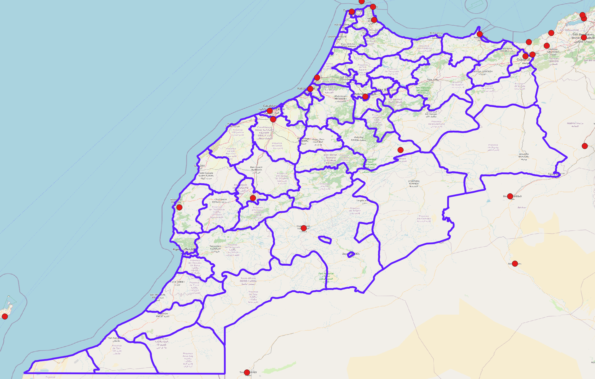
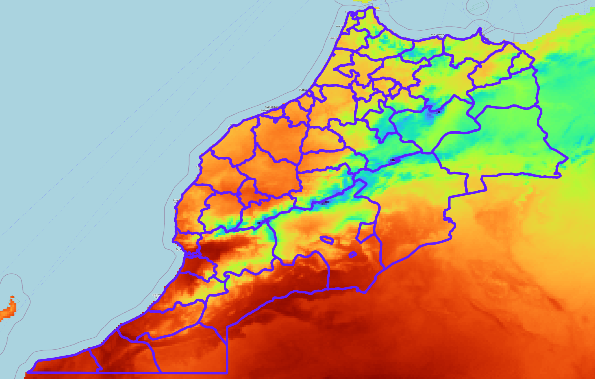
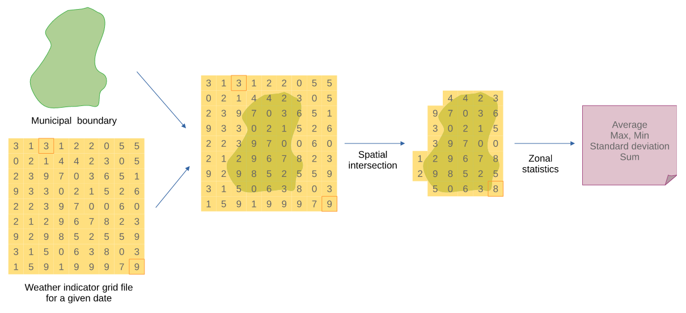

Harmonização de indicadores em saúde
Estudos em Saúde Pública demandam uma grande quantidade de indicadores, provenientes de diversas áreas, para melhor refletir a realidade estudada, incluindo diversos aspectos contextuais sobre o processo saúde, doença e cuidado.
A diversidade de indicadores introduz um desafio extra: a necessidade de compatibilizar os indicadores de modo a permitir a sua observação e comparação simultânea.
Indicadores de saúde costumam ser agregados e divulgados por unidades administrativas ou sanitárias, como taxas de incidência de doenças por bairros, municípios ou regiões de saúde (dimensão espacial) e por dias, semanas epidemiológicas ou meses (dimensão temporal). Indicadores sociodemográficos seguem estruturas semelhantes.
Já indicadores ambientais, como temperatura, precipitação, costumam ser apresentados por estação meteorológica (um ponto no espaço) ou como uma superfície espacial, com intervalos horários ou diários (dimensão temporal). Assim, para se incluir em uma mesma análise, indicadores de saúde, e indicadores de temperatura e precipitação, se faz necessário realizar um procedimento para a compatibilização das escalas espaciais e temporais.
Conceito
Entende-se aqui esse processo de compatibilização como “harmonização de indicadores”, onde as escalas temporais e espaciais dos indicadores são trabalhadas de modo a serem analisadas de modo interoperável.
Operacionalização
A operacionalização da harmonização de indicadores se dá através do re-cálculo dos indicadores para novas escalas espaciais e temporais, estabelecidas a priori considerando as necessidades do estudo. Ou seja, deve-se primeiro ponderar-se sobre qual a escala temporal e espacial adequada para o estudo, e realizar os procedimentos de harmonização de acordo com as escalas definidas.
Neste processo, indicadores de contagem podem ser somados ou divididos, mas indicadores como taxas e proporções devem ser recalculados.
No caso de indicadores de taxas e proporções, não se deve aplicar estatísticas resumo, como média, mediada ou desvio padrão, para se obter o valor para a nova escala de análise. O indicador deve ser re-calculado inteiramente para a nova escala, considerando os novos valores de numerador e denominador.
Dimensão temporal
A harmonização de indicadores na dimensão temporal se dá através da agregação ou desagregação do indicador para uma nova dimensão de tempo. Esta agregação/desagregação pode envolver a simples soma de valores no caso de indicadores de contagem, ou o re-cálculo do indicador considerando a nova escala temporal.
Por exemplo, se o indicador de saúde é uma contagem de casos por dia e se tem por objetivo da harmonização apresentar este indicador por semana epidemiológica, o procedimento será realizar a soma da quantidade de casos que ocorrem em uma mesma semana epidemiológica.
Contudo, se o indicador for uma taxa, ele deve ser recalculado considerando a contagem para a nova escala e o valor do denominador apropriado.
Dimensão espacial
A harmonização de indicadores na escala espacial deve ser considerar se o indicador é apresentado por pontos, por agregados em região administrativa, ou uma superfície espacial.
Pontos no espaço
Caso os valores do indicador sejam apresentados como pontos no espaço (exemplo, medidas de temperatura por estação meteorológica, os valores do indicador para cada ponto de mensuração devem ser agregados para a nova dimensão pretendida (como municípios ou alguma região administrativa).

A figura acima apresenta algumas estações meteorológicas localizadas no Marrocos e uma subdivisão administrativa do território. Em regiões com apenas uma estação, o valor desta estação é aplicado para a região. Em regiões com mais de uma estação, os valores das estações devem ser agregados e aplicados para a região. Regiões sem estações ficam sem valor para o indicador.
Regiões administrativas
Indicadores apresentados por regiões administrativas podem ser re-agregados para outras regiões administrativas caso exista uma hierarquia espacial compatível entre essas escalas. Por exemplo: municípios, microrregiões, macrorregiões, unidades federativas e grandes regiões. Neste caso, uma unidade espacial não pode estar contida em mais de uma outra unidade espacial de nível superior (por exemplo, um município não pode pertencer a duas ou mais UFs).
Superfície espacial
A harmonização de um indicador que é apresentado como uma superfície espacial é um caso especial de harmonização, onde é possível a aplicação de estatísticas resumo (como média, mediana e desvio-padrão).
Neste caso de harmonização de indicadores, o indicador de superfície espacial deve ser, primeiramente, sobreposto espacialmente à malha dos limites administrativos, como apresentado na figura abaixo.

Com esta sobreposição, observa-se quais pixels da superfície intersectam um elemento da malha. Considerando o conjunto de valores do indicador dos pixels que intersectam um dos elementos da malha, é aplicada uma estatística resumo, como a média. Este procedimento é denominado “estatística zonal” em softwares de geoprocessamento e Sistemas de Informação Geográfica (SIGs).
